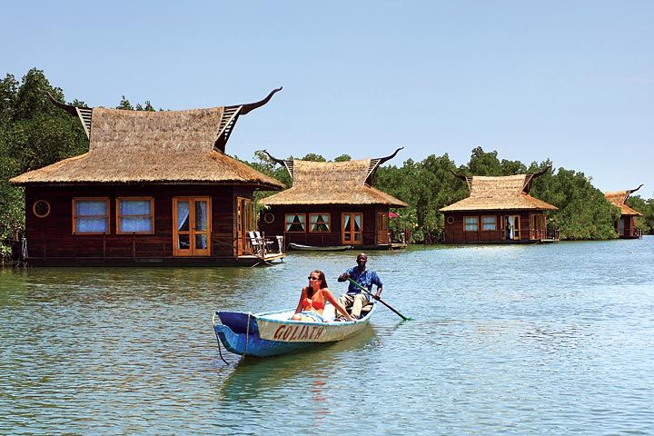
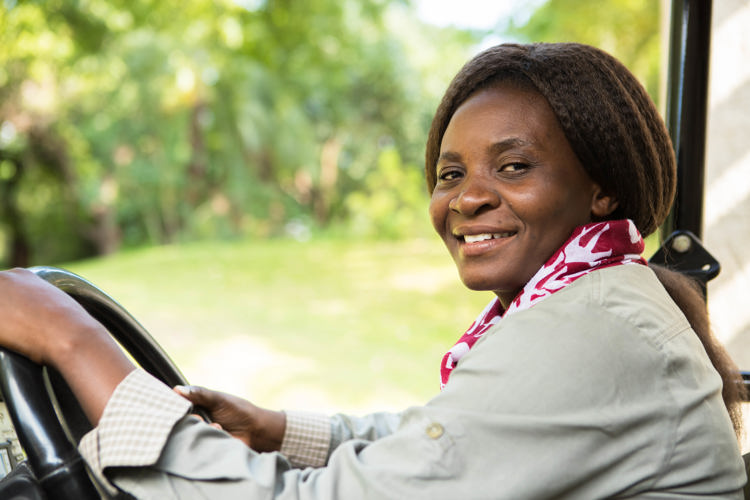

Meet Our Local Guides
Connect with friendly, knowledgeable experts who are passionate about sharing their home with you. Let our professional guides provide the insider stories and safety you need for a truly authentic experience.

Temi James
Rating: 5 star
Rating: 5 star

Ramatoulie Ndure
Rating: 4.5 star
Rating: 4.5 star
Omar B. Fatty
Rating: 4 star
Rating: 4 star
Kausu Kinteh
Rating: 3.5 star
Rating: 3.5 star
Lamin Saidy
Rating: 3 star
Rating: 3 star
Dawda Jammeh
Rating: 2.5 star
Rating: 2.5 star
Awa Sabally
Rating: 2 star
Rating: 2 star
Ya Amie Njie
Rating: 1.5 star
Rating: 1.5 star